Teoria prawa jazdy
Zwięzłe kompendium najważniejszych zasad polskiego ruchu drogowego, niezbędnych do zdania państwowego egzaminu teoretycznego i praktycznego.
1. Podstawowe pojęcia
Definicje z art. 2 ustawy Prawo o ruchu drogowym, których znajomość warunkuje poprawne odpowiedzi na większość pytań egzaminacyjnych.
Droga
Wydzielony pas terenu składający się z jezdni, pobocza, chodnika, drogi dla pieszych lub drogi dla rowerów, łącznie z torowiskiem, przeznaczony do ruchu lub postoju pojazdów, ruchu pieszych, jazdy wierzchem lub pędzenia zwierząt.
Jezdnia
Część drogi przeznaczona do ruchu pojazdów. Pojęcie to nie obejmuje torowisk wydzielonych z jezdni.
Pas ruchu
Każdy z podłużnych pasów jezdni wystarczający do ruchu jednego rzędu pojazdów wielośladowych, oznaczony lub nieoznaczony znakami drogowymi.
Pobocze
Część drogi przyległa do jezdni, która może być przeznaczona do ruchu pieszych lub niektórych pojazdów, postoju pojazdów, jazdy wierzchem lub pędzenia zwierząt.
Chodnik
Część drogi dla pieszych przeznaczona do ruchu pieszych, którą kierujący pojazdem może przejechać tylko w wyjątkowych, dozwolonych przepisami sytuacjach (np. dojazd do nieruchomości).
Uczestnik ruchu
Pieszy, kierujący pojazdem, a także inne osoby przebywające w pojeździe lub na pojeździe znajdującym się na drodze.
Pieszy
Osoba znajdująca się poza pojazdem na drodze i niewykonująca na niej robót lub czynności przewidzianych odrębnymi przepisami. Za pieszego uważa się również osobę prowadzącą rower, motorower lub motocykl, osobę poruszającą się na wózku inwalidzkim, dziecko do 10. roku życia kierujące rowerem pod opieką dorosłego oraz osobę poruszającą się na urządzeniu wspomagającym ruch.
Pojazd uprzywilejowany
Pojazd wysyłający jednocześnie sygnały świetlne w postaci niebieskich (lub niebieskich i czerwonych) świateł błyskowych oraz dźwiękowy o zmiennym tonie. Każdy uczestnik ruchu ma obowiązek ułatwić mu przejazd — w razie potrzeby przez zatrzymanie pojazdu.
Szczególna ostrożność
Ostrożność polegająca na zwiększeniu uwagi i dostosowaniu zachowania uczestnika ruchu do warunków i sytuacji zmieniających się na drodze, w stopniu umożliwiającym odpowiednio szybkie reagowanie.
Ustąpienie pierwszeństwa
Powstrzymanie się od ruchu, jeżeli ruch ten mógłby zmusić innego uczestnika do zmiany kierunku, pasa ruchu lub istotnej zmiany prędkości. Nie zawsze oznacza zatrzymanie — wystarczy zwolnić, jeżeli pozwala to spokojnie wpuścić uprzywilejowany pojazd.
Skrzyżowanie
Przecięcie się w jednym poziomie dróg mających jezdnię, ich połączenie lub rozwidlenie, łącznie z powierzchniami utworzonymi przez takie przecięcia. Na skrzyżowaniu działają znaki regulujące pierwszeństwo (D-1, A-7, B-20) i — w razie ich braku — zasada prawej ręki.
- Wyjazd z drogi gruntowej, polnej lub leśnej na drogę utwardzoną.
- Wyjazd z parkingu, stacji paliw, posesji czy stacji obsługi.
- Wyjazd z drogi wewnętrznej oznaczonej znakiem D-46 / D-47.
- Połączenie z drogą oznaczoną jako „strefa zamieszkania" (D-40).
W tych miejscach nie działa zasada prawej ręki. Kierujący wyjeżdżający z drogi nieuznawanej za drogę publiczną zawsze ustępuje pierwszeństwa wszystkim pojazdom poruszającym się drogą, na którą wjeżdża (włączanie się do ruchu, art. 17).
Szybki test
Czy chodnik jest częścią drogi w rozumieniu ustawy?
Czy ustąpienie pierwszeństwa zawsze oznacza obowiązek zatrzymania pojazdu?
Czy wyjazd z parkingu na drogę publiczną jest skrzyżowaniem?
2. Hierarchia ważności poleceń i znaków
W razie sprzeczności obowiązuje to, co jest wyżej w hierarchii. Jedna z najczęściej testowanych zasad na egzaminie.
- Polecenia i sygnały osoby kierującej ruchem Funkcjonariusz Policji, Żandarmerii Wojskowej, Straży Gminnej (Miejskiej), Inspekcji Transportu Drogowego, pracownik kolei na przejeździe, osoba uprawniona do prowadzenia kolumny pieszych. Polecenia te są nadrzędne nawet wobec sygnalizacji świetlnej i znaków.
- Sygnały świetlne Sygnalizacja S-1 (zielony, żółty, czerwony), sygnalizacja kierunkowa S-3, sygnały dla pieszych S-5 i rowerzystów S-6.
- Znaki drogowe (pionowe i poziome) W razie sprzeczności znaki pionowe są nadrzędne nad poziomymi. Wśród znaków pierwszeństwo mają znaki regulujące pierwszeństwo (B-20 „STOP", A-7, D-1) wobec ogólnych zasad.
- Ogólne zasady ruchu drogowego W tym zasada prawej ręki — ustępujemy pojazdowi nadjeżdżającemu z prawej strony. Stosowana, gdy żaden z powyższych elementów nie reguluje pierwszeństwa.
Sygnał czerwony nigdy nie jest „ważniejszy" od polecenia osoby kierującej ruchem. Jeżeli policjant nakazuje przejechać przez skrzyżowanie pomimo czerwonego światła — należy go usłuchać.
Sygnały dawane przez osobę kierującą ruchem
- Postawa zasadnicza (ramiona opuszczone wzdłuż tułowia) — odpowiednik światła czerwonego dla wszystkich kierunków, z których kierujący jest widoczny przodem lub tyłem; wjazd na skrzyżowanie zabroniony.
- Ramię uniesione w górę — odpowiednik światła żółtego: zakaz wjazdu na skrzyżowanie, należy się zatrzymać przed nim.
- Ramiona wyciągnięte poziomo (na boki) — odpowiednik światła czerwonego dla kierunków, z których policjant widoczny jest przodem lub tyłem; zielonego dla kierunków, z których widoczny jest bokiem.
- Lewe ramię uniesione w przód i w bok — sygnał o zmianie nadawanego sygnału z zielonego na żółty (analogicznie do żółtego światła).
Szybki test
Czy polecenie policjanta jest ważniejsze od czerwonego światła?
Czy w razie sprzeczności znak poziomy ma pierwszeństwo nad pionowym?
3. Zasady zachowania ostrożności
Pojęcia „ostrożności" i „szczególnej ostrożności" definiuje art. 2 ustawy Prawo o ruchu drogowym i decydują one o zakresie odpowiedzialności kierującego w razie zdarzenia drogowego.
Ostrożność (zwykła)
Wymóg generalny — uczestnik ruchu i każda inna osoba znajdująca się na drodze są obowiązani zachować ostrożność i unikać wszelkiego działania, które mogłoby spowodować zagrożenie bezpieczeństwa lub porządku ruchu, utrudnić ruch albo narazić kogokolwiek na szkodę (art. 3 ust. 1 PoRD).
W praktyce oznacza prowadzenie pojazdu z prędkością i w sposób umożliwiający zatrzymanie się przed napotkaną przeszkodą, której kierujący mógł się spodziewać (np. pojazd włączający się do ruchu, pieszy idący chodnikiem).
Szczególna ostrożność
Ostrożność polegająca na zwiększeniu uwagi i dostosowaniu zachowania uczestnika ruchu do warunków i sytuacji zmieniających się na drodze, w stopniu umożliwiającym odpowiednio szybkie reagowanie.
Szczególna ostrożność jest wymagana tylko wtedy, gdy konkretny przepis tak stanowi. Oznacza wyższy próg czujności — kierujący musi spodziewać się również nieoczywistych zachowań innych uczestników ruchu (np. wtargnięcie pieszego, błędna decyzja innego kierowcy).
Sytuacje wymagające szczególnej ostrożności
Katalog sytuacji wynika wprost z ustawy. Pominięcie wymogu szczególnej ostrożności w którejkolwiek z poniższych sytuacji to częsta przyczyna niezdania egzaminu praktycznego i podstawa do przypisania winy w razie kolizji.
- Włączanie się do ruchu Art. 17 — wjazd z drogi gruntowej na utwardzoną, z parkingu, chodnika, pobocza, ruszanie z miejsca postojowego, jazda po cofnięciu.
- Zmiana pasa ruchu Art. 22 ust. 1 — obowiązek upewnienia się o możliwości manewru i ustąpienia pojazdom poruszającym się po pasie docelowym.
- Zmiana kierunku jazdy Art. 22 — skręt w prawo, w lewo, zawracanie. Wymagane wcześniejsze zasygnalizowanie kierunkowskazem.
- Cofanie Art. 23 ust. 1 pkt 3 — kierujący musi ustąpić pierwszeństwa wszystkim innym uczestnikom ruchu i upewnić się, że za pojazdem nie ma przeszkód.
- Wyprzedzanie Art. 24 — przed wyprzedzaniem należy upewnić się o dostatecznej widoczności i miejscu do powrotu na pas; nie utrudniać manewrów innym kierującym.
- Zbliżanie się do skrzyżowania Art. 25 ust. 1 — niezależnie od tego, czy jesteśmy na drodze z pierwszeństwem, należy zwiększyć uwagę i dostosować prędkość.
- Zbliżanie się do przejścia dla pieszych Art. 26 ust. 1 — szczególna ostrożność, zmniejszenie prędkości i ustąpienie pierwszeństwa pieszemu na przejściu oraz wchodzącemu na przejście.
- Zbliżanie się do przejazdu dla rowerzystów Art. 27 ust. 1 — ustąpienie pierwszeństwa rowerzyście znajdującemu się na przejeździe; zakaz wyprzedzania bezpośrednio przed przejazdem.
- Przejazd kolejowy lub tramwajowy Art. 28 — upewnienie się, że nie zbliża się pociąg/tramwaj; obserwacja sygnalizacji i półrogatek.
- Jazda w warunkach zmniejszonej przejrzystości powietrza Art. 30 — mgła, opady, zadymienie. Należy zmniejszyć prędkość i włączyć światła mijania (oraz przeciwmgłowe, gdy widoczność spada poniżej 50 m).
- Mijanie pojazdu przewożącego dzieci Art. 57a — autobus szkolny lub pojazd oznakowany tablicą „przewóz dzieci". Szczególna ostrożność, zmniejszenie prędkości, gotowość do zatrzymania.
- Pieszy z białą laską lub psem przewodnikiem Art. 26 ust. 7 — bezwzględny obowiązek umożliwienia przejścia osobie niewidomej, niezależnie od miejsca pojawienia się na drodze.
Zbliżając się do przejścia dla pieszych nie wystarczy zwolnić. Egzaminator oczekuje obserwacji obu stron jezdni w celu wykrycia pieszego nadchodzącego do przejścia. Brak takiej obserwacji może być uznany za niezachowanie szczególnej ostrożności — nawet jeżeli na pasach nikogo nie ma.
Szczególna ostrożność = aktywna obserwacja + gotowość do natychmiastowej reakcji. Sama redukcja prędkości nie wystarcza. Brak szczególnej ostrożności tam, gdzie ustawa jej wymaga, jest traktowany jako wykroczenie i zazwyczaj jako podstawowa przyczyna w razie zdarzenia drogowego.
Zasada ograniczonego zaufania (art. 4 PoRD)
Domyślnie kierujący ma prawo zakładać, że inni uczestnicy ruchu przestrzegają przepisów. Jednak okoliczności mogą wskazywać, że inny uczestnik może zachować się nieprawidłowo — wtedy nakaz zmienia się: kierujący musi przewidywać błędne zachowanie i być gotów na reakcję.
Sytuacje, w których obowiązuje pełne ograniczenie zaufania
- Dziecko do 15. roku życia przy jezdni lub na chodniku — może niespodziewanie wbiec na drogę.
- Osoba o widocznych oznakach niesprawności — niewidomy z białą laską, osoba o kulach, osoba na wózku.
- Osoba w widocznym stanie nietrzeźwości — chwiejny chód, zataczanie się.
- Osoba w podeszłym wieku w pobliżu jezdni — może źle ocenić odległość lub prędkość.
- Pojazd z literą „L" (nauka jazdy) — kierowca uczący się może popełnić błąd przewidywalny dla doświadczonego.
- Kierowca, który już wcześniej zachował się nietypowo — np. zatoczył się, niespodziewanie hamował, zmieniał pasy bez kierunkowskazu.
Ograniczone zaufanie nie oznacza paranoi — nie musisz zakładać, że każdy popełni błąd. Reagujesz tylko na konkretne sygnały, że ktoś może zachować się nietypowo. Egzaminator zwraca uwagę, czy widzisz dziecko biegnące w kierunku przejścia i czy odpowiednio wcześnie zwalniasz.
Szybki test
Czy szczególna ostrożność jest wymagana w każdej sytuacji na drodze?
Widząc dziecko biegnące w kierunku przejścia powinieneś zwolnić, nawet jeżeli pali się dla Ciebie zielone światło?
4. Znaki drogowe i sygnały
Znaki dzielą się na pięć grup według koloru i kształtu. Kategoria pozwala szybko zorientować się w funkcji znaku, zanim odczytamy jego symbol.
Znaki ostrzegawcze (A)
Trójkąt · żółte tło · czerwona obwódkaUprzedzają o niebezpieczeństwie. Należy zwiększyć uwagę i dostosować prędkość. Umieszczane zwykle 150–300 m przed miejscem niebezpiecznym (poza obszarem zabudowanym).
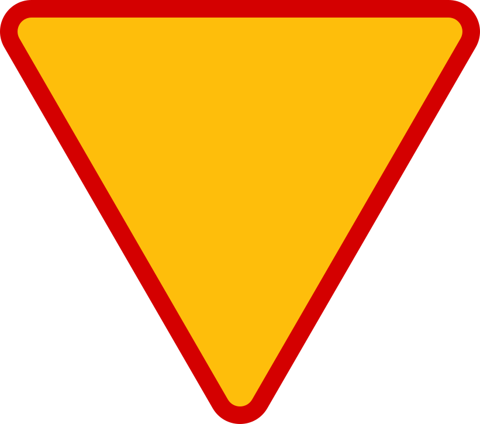
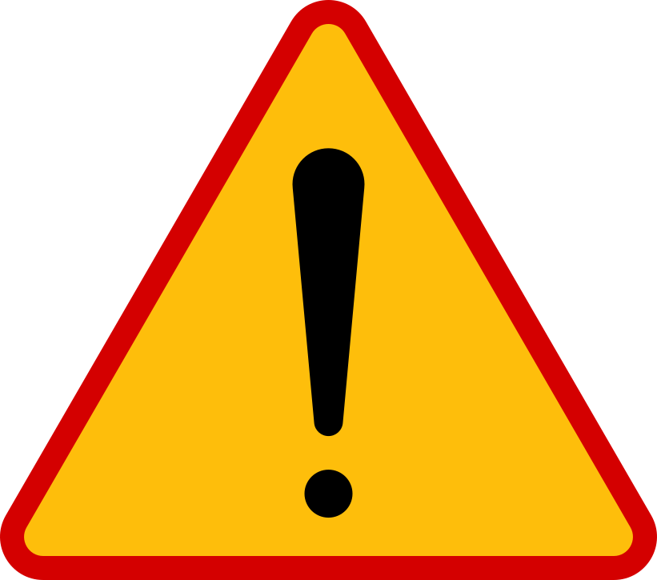
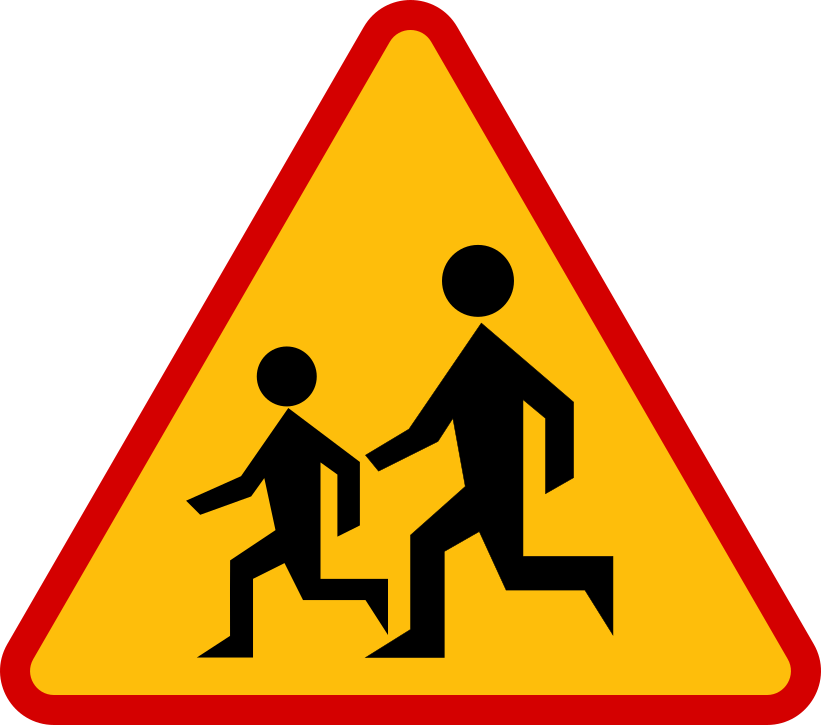
Znaki zakazu (B)
Koło · biało-czerwone · symbol czarnyWyrażają zakazy. Obowiązują od miejsca ustawienia do najbliższego skrzyżowania (jeśli przepis nie stanowi inaczej) lub do znaku odwołującego.
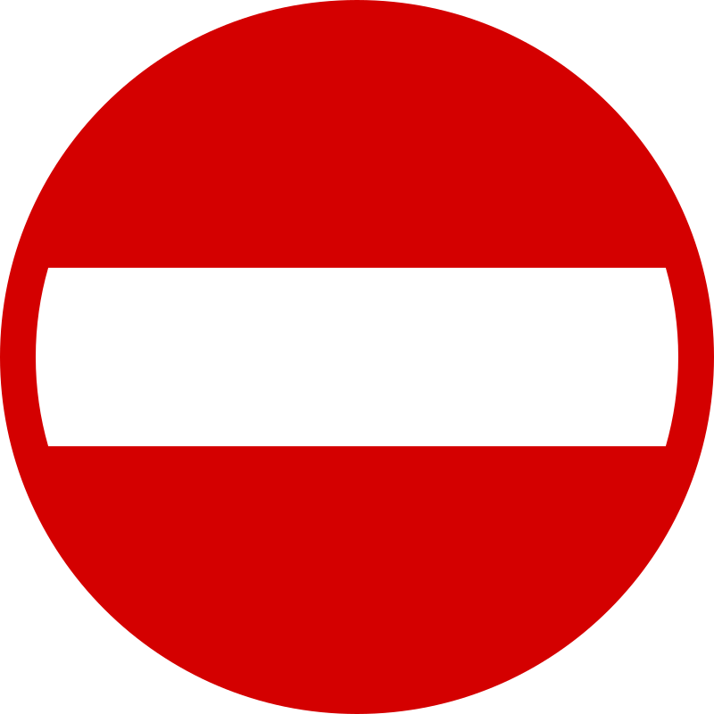
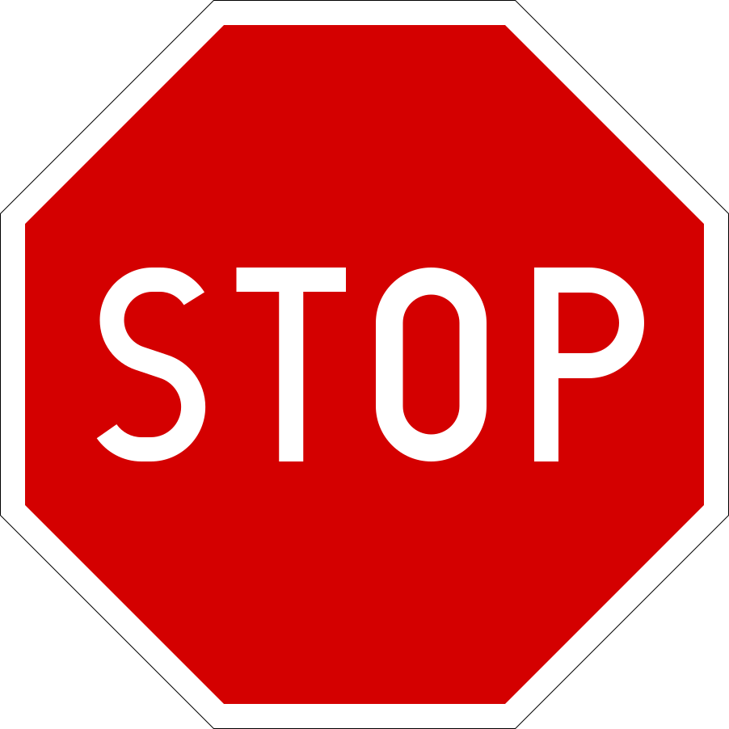
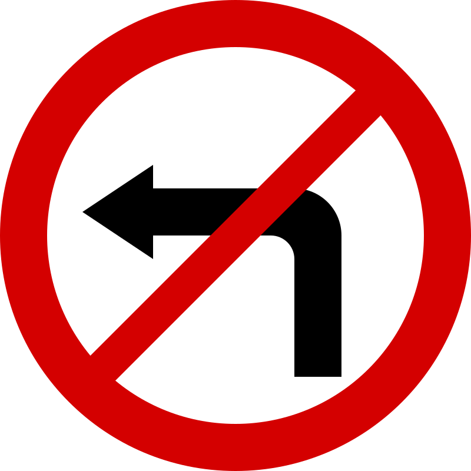
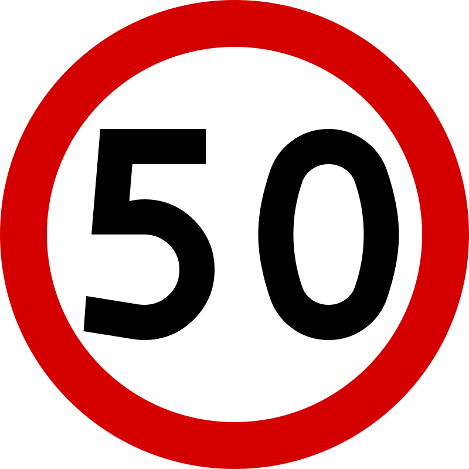
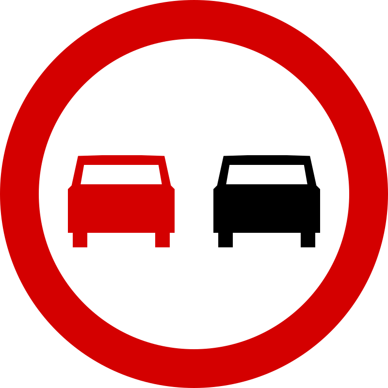
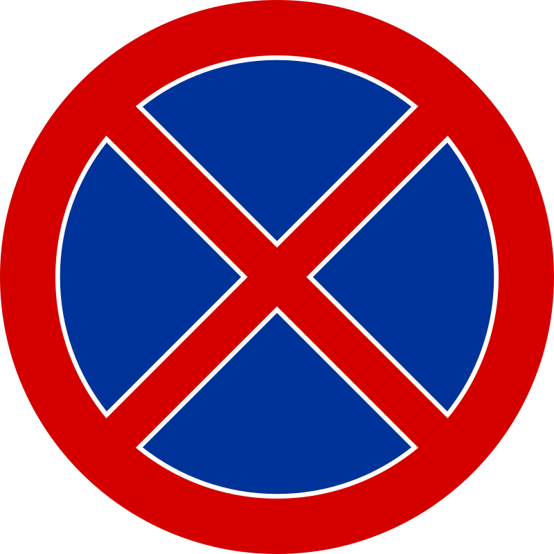
Znaki nakazu (C)
Koło · niebieskie tło · biały symbolWskazują obowiązkowy kierunek lub sposób jazdy. Stosowane głównie na skrzyżowaniach i przy zwężeniach.
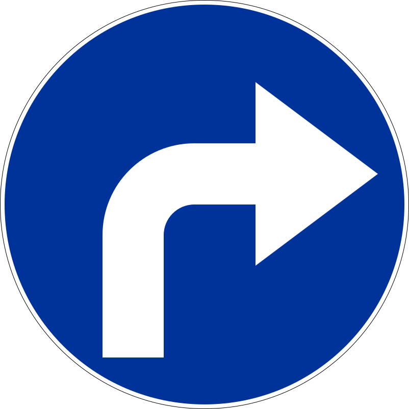
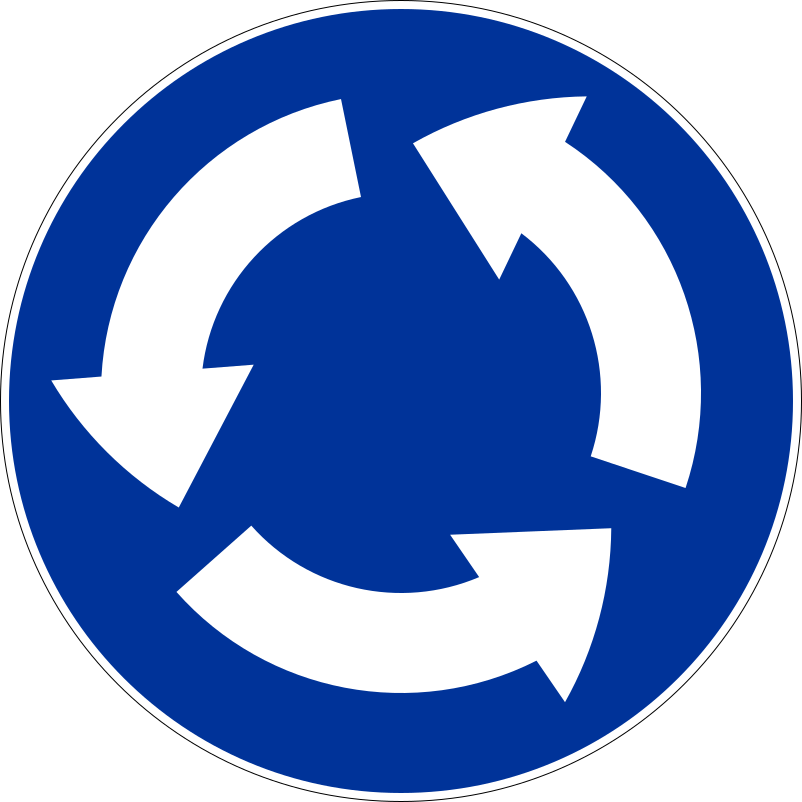
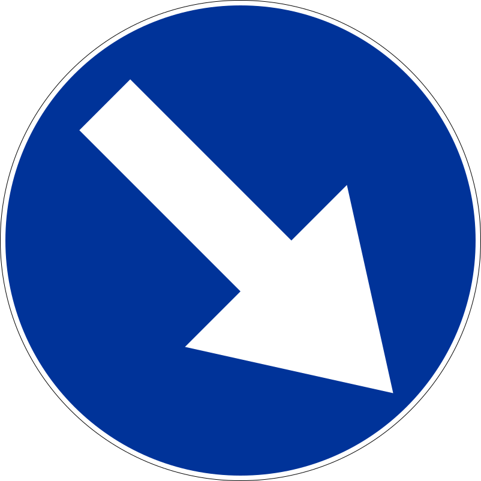
Znaki informacyjne (D)
Najczęściej kwadrat lub prostokąt · niebieskieInformują o rodzaju drogi lub o sposobie korzystania z niej oraz o obiektach na drodze i przy drodze.
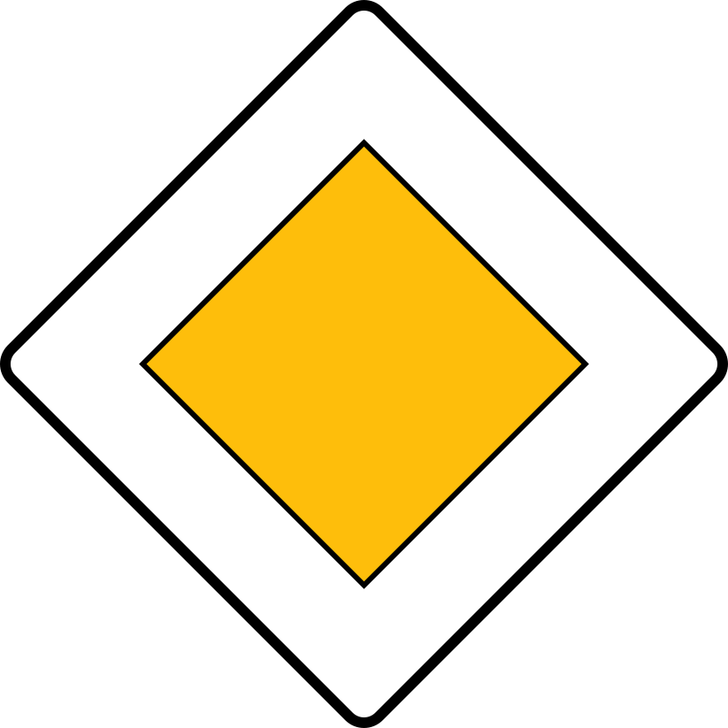
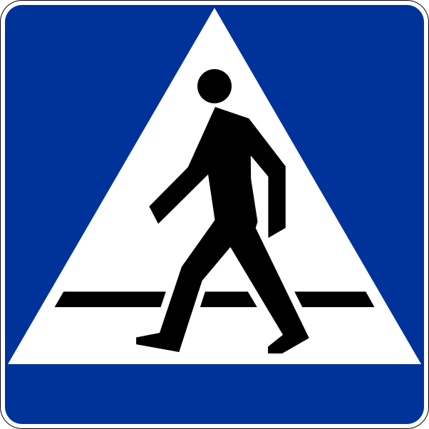
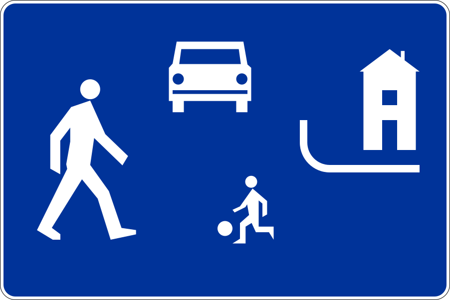
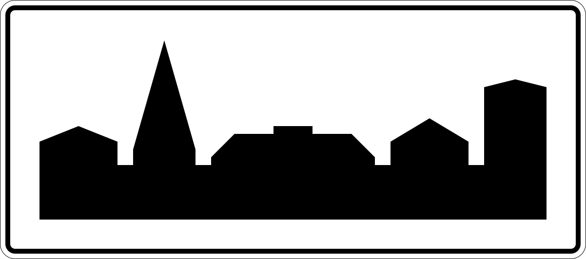
Sygnalizacja świetlna (S)
- S-1 (zielony, żółty, czerwony) – sygnał ogólny dla pojazdów.
- Zielona strzałka warunkowa obok czerwonego sygnału — zezwala na skręt w prawo (lub w lewo z drogi jednokierunkowej) po zatrzymaniu się i ustąpieniu pierwszeństwa wszystkim innym uczestnikom ruchu, w tym pieszym.
- Żółty migający – ostrzega o niesprawnej lub wyłączonej sygnalizacji; pierwszeństwo zgodnie ze znakami lub zasadą prawej ręki.
- S-3 sygnał kierunkowy – strzałka w sygnalizatorze; dotyczy wyłącznie wskazanego kierunku.
- Sygnalizacja taktowa przy przejazdach kolejowych (czerwony pulsujący lub dwa naprzemienne) – obowiązek zatrzymania.
Szybki test
Czy przy znaku B-20 STOP musisz się zatrzymać nawet wtedy, gdy droga z pierwszeństwem jest pusta?
Czy znak C-12 (ruch okrężny) sam z siebie daje pierwszeństwo pojazdom poruszającym się po rondzie?
5. Dopuszczalne prędkości
Limity dla samochodu osobowego (kategoria B) oraz motocykla, jeżeli przepis lokalny lub znak nie stanowi inaczej.
| Rodzaj drogi | Pora | Limit |
|---|---|---|
| Obszar zabudowany | całą dobę | 50 km/h |
| Strefa zamieszkania (D-40) | — | 20 km/h |
| Poza obszarem zabudowanym — droga jednojezdniowa dwukierunkowa | — | 90 km/h |
| Poza obszarem zabudowanym — droga dwujezdniowa co najmniej po dwa pasy w każdą stronę | — | 100 km/h |
| Droga ekspresowa jednojezdniowa | — | 100 km/h |
| Droga ekspresowa dwujezdniowa | — | 120 km/h |
| Autostrada | — | 140 km/h |
Pojazd z przyczepą (kat. B z przyczepą lekką lub B+E)
| Rodzaj drogi | Limit |
|---|---|
| Obszar zabudowany | 50 km/h |
| Poza obszarem zabudowanym | 70 km/h |
| Droga ekspresowa / autostrada | 80 km/h |
Holowanie pojazdu silnikowego (art. 31 PoRD)
| Rodzaj drogi | Limit |
|---|---|
| Obszar zabudowany | 30 km/h |
| Poza obszarem zabudowanym | 60 km/h |
| Autostrada i droga ekspresowa | zabronione* |
* Z wyjątkiem holowania przez pojazdy do tego przeznaczone (np. pomoc drogowa) — wyłącznie do najbliższego zjazdu lub MOP.
- Pojazd holujący ma włączone światła mijania również w okresie dostatecznej widoczności (cały dzień, niezależnie od pory).
- Pojazd holowany jest oznaczony z tyłu, po lewej stronie, ostrzegawczym trójkątem odblaskowym. Może być też zastosowane żółte światło błyskowe widoczne ze wszystkich stron.
- W okresie niedostatecznej widoczności pojazd holowany musi mieć dodatkowo włączone światła pozycyjne.
- Połączenie giętkie (lina): długość 4–6 m, oznaczone na środku białą chorągiewką lub tablicą biało-czerwoną.
- Połączenie sztywne (hol): długość nie większa niż 3 m.
- Kierujący pojazdem holowanym musi mieć uprawnienia do prowadzenia tej kategorii pojazdu (chyba że holowanie wyklucza potrzebę kierowania — np. pojazd na lawecie lub z podniesionymi kołami).
- Holowanie zabronione, gdy w pojeździe holowanym nie działa układ kierowniczy lub układ hamulcowy (chyba że holowanie wyklucza potrzebę ich użycia).
- Zabronione w warunkach zmniejszonej przejrzystości powietrza (mgła, zadymienie).
Wbrew popularnemu przekonaniu, podczas holowania nie używamy świateł awaryjnych — sygnalizują one awaryjne zatrzymanie lub zagrożenie, a nie powolny ruch. Pojazd holujący jedzie ze światłami mijania, holowany jest oznakowany trójkątem odblaskowym (lub żółtym światłem błyskowym).
Przekroczenie dopuszczalnej prędkości o ponad 50 km/h w obszarze zabudowanym skutkuje zatrzymaniem prawa jazdy na 3 miesiące (art. 135 ust. 1 PoRD). Po upływie tego okresu okres zostaje przedłużony do 6 miesięcy, jeśli kierowca prowadził w czasie zatrzymania.
Bezpieczny odstęp — zasada 2 sekund
Bezpieczny odstęp od pojazdu poprzedzającego mierzymy czasem, a nie metrami — bo przy większej prędkości potrzebujemy więcej miejsca na zatrzymanie.
Jak zmierzyć odstęp w praktyce
- Wybierz nieruchomy punkt na poboczu (drzewo, znak, latarnia).
- Gdy pojazd przed Tobą minie ten punkt, zacznij liczyć: „dwadzieścia jeden, dwadzieścia dwa".
- Jeżeli mijasz punkt przed skończeniem liczenia, odstęp jest za mały — zwolnij.
Zalecane wartości odstępu
| Warunki | Minimalny odstęp | Praktycznie |
|---|---|---|
| Sucho, dobra widoczność | 2 sekundy | ~ 25 m przy 50 km/h, ~ 50 m przy 90 km/h |
| Mokra nawierzchnia, deszcz | 4 sekundy | droga hamowania wydłuża się 1,5–2-krotnie |
| Śnieg, lód, mgła | 6 sekund | przyczepność spada wielokrotnie |
Odstępy ustawowe (art. 19a PoRD)
- Tunel powyżej 500 m — minimum 50 m między pojazdami osobowymi.
- Autostrada i droga ekspresowa — minimum 50 m między pojazdami (poza zatorem). Praktyczna zasada: „połowa wskazanej prędkości w metrach" — przy 100 km/h trzymaj 50 m.
Jazda zbyt blisko pojazdu poprzedzającego („ogon"). Egzaminator obserwuje, czy widoczne są tablice rejestracyjne pojazdu z przodu — jeżeli nie, odstęp jest za mały. Zbyt mały odstęp w ruchu drogowym może być powodem zakończenia egzaminu.
Szybki test
Czy w obszarze zabudowanym wolno jechać 60 km/h, jeżeli nie ma znaku ograniczającego prędkość?
Czy odstęp 2 sekund od poprzedzającego pojazdu wystarcza w deszczu?
Czy w tunelu powyżej 500 m obowiązuje minimalny odstęp 50 m od pojazdu poprzedzającego?
6. Skrzyżowania i ronda
Najważniejsze: poprawnie rozpoznać typ skrzyżowania (równorzędne, z drogą podporządkowaną, rondo) i ustalić kolejność przejazdu.
Skrzyżowanie równorzędne
Brak znaków regulujących pierwszeństwo i sygnalizacji. Obowiązuje zasada prawej ręki: ustępujesz każdemu pojazdowi nadjeżdżającemu z twojej prawej strony.
Skrzyżowanie ze znakami pierwszeństwa
- D-1 – droga z pierwszeństwem (żółty romb).
- A-7 – ustąp pierwszeństwa. Należy zwolnić, a w razie potrzeby zatrzymać się i ustąpić.
- B-20 „STOP" – bezwzględny obowiązek zatrzymania się, nawet jeżeli droga jest pusta. Zatrzymujemy się przed linią P-12, a w razie jej braku — przed znakiem.
Rondo
Sposób przejazdu zależy od oznakowania ronda — to częste źródło błędów.
Rondo z A-7 + C-12 (typowe)
Przed wjazdem znajdują się znaki „ustąp pierwszeństwa" oraz „ruch okrężny". Pojazdy znajdujące się na rondzie mają pierwszeństwo, a wjeżdżające — ustępują.
Rondo z samym C-12 (bez A-7)
Obowiązuje zasada prawej ręki — pojazdy wjeżdżające mają pierwszeństwo nad tymi już na rondzie. Spotykane bardzo rzadko.
Rondo wielopasowe (turbinowe)
Dodatkowo obowiązują znaki poziome (P-8a/b/c – strzałki kierunkowe). Wybór pasa przed wjazdem determinuje, gdzie można zjechać. Z lewego pasa nie wolno zjeżdżać pierwszym ani drugim zjazdem, jeżeli strzałki tego nie przewidują.
Wjeżdżając na rondo nie używamy lewego kierunkowskazu (chyba że bezpośrednio zmieniamy pas). Włączamy prawy kierunkowskaz dopiero przed zjazdem z ronda.
Tramwaj — pierwszeństwo i trzy wyjątki
Tramwaj porusza się po wydzielonym torowisku, ma długą drogę hamowania i nie może wykonać uniku. Dlatego ustawa daje mu szczególne pierwszeństwo.
Na skrzyżowaniu równorzędnym kierujący pojazdem szynowym ma pierwszeństwo przed innymi pojazdami, niezależnie od kierunku, z którego nadjeżdża. Nawet wobec pojazdu nadjeżdżającego z prawej strony tramwaju.
Trzy wyjątki — kiedy tramwaj NIE ma pierwszeństwa
- Sygnalizacja świetlna na skrzyżowaniu Jeżeli skrzyżowanie ma sygnalizację, tramwaj porusza się tylko zgodnie z nią (sygnalizator ogólny S-1 lub specjalny S-2 dla tramwajów). Czerwone światło zatrzymuje również tramwaj.
- Tramwaj wyjeżdża z drogi podporządkowanej Jeżeli pierwszeństwo regulują znaki (D-1 droga z pierwszeństwem, A-7 ustąp pierwszeństwa, B-20 STOP), tramwaj traktujemy jak każdy inny pojazd. Tramwaj na drodze podporządkowanej ustępuje pojazdom z drogi z pierwszeństwem.
- Pojazd uprzywilejowany w akcji Karetka, straż pożarna, policja — pojazdy uprzywilejowane mają pierwszeństwo nawet przed tramwajem. Tramwaj musi ustąpić jak każdy inny uczestnik ruchu.
Skręcając w lewo z pasa biegnącego obok torowiska, zawsze sprawdź, czy tramwaj nie nadjeżdża z naprzeciwka. Tramwaj ma pierwszeństwo — masz obowiązek go przepuścić, niezależnie od tego, że Ty jedziesz na wprost po drodze z pierwszeństwem.
Szybki test
Czy na skrzyżowaniu równorzędnym ustępujesz pojazdowi nadjeżdżającemu z lewej strony?
Czy tramwaj ma pierwszeństwo zawsze i wszędzie?
Czy skręcając w lewo musisz ustąpić pierwszeństwa tramwajowi nadjeżdżającemu z naprzeciwka?
7. Manewry: wyprzedzanie, wymijanie, omijanie
Trzy manewry różniące się sytuacją początkową, choć wizualnie podobne. Pomyłka w klasyfikacji manewru i niezastosowanie właściwych reguł to jeden z najczęstszych błędów na egzaminie teoretycznym.
Tabela porównawcza
| Manewr | Wobec kogo / czego | Kierunek drugiego uczestnika | Typowy przykład |
|---|---|---|---|
| Wyprzedzanie | inny uczestnik ruchu | ten sam | Mijanie wolniejszego pojazdu jadącego przed nami |
| Wymijanie | inny uczestnik ruchu | przeciwny | Spotkanie pojazdu nadjeżdżającego z naprzeciwka |
| Omijanie | nieporuszający się uczestnik lub przeszkoda | — | Objechanie zaparkowanego auta lub leżącej gałęzi |
Wyprzedzanie
Przejeżdżanie obok pojazdu lub uczestnika ruchu poruszającego się w tym samym kierunku (art. 24 PoRD). Najbardziej ryzykowny z trzech manewrów — wymaga wjazdu na pas przeciwny lub sąsiedni.
Sekwencja 6 kroków — niezawodna procedura
- Obserwuj Sprawdź lusterko wewnętrzne i lewe lusterko boczne, oceń odległość pojazdu z tyłu. Spójrz przed siebie — czy widoczność jest dostateczna (zakręt? wzniesienie?).
- Sygnalizuj Włącz lewy kierunkowskaz z odpowiednim wyprzedzeniem, by inni kierujący zdążyli zareagować.
- Sprawdź martwe pole Krótkie spojrzenie przez lewe ramię — to obszar niewidoczny w lusterkach. Pomijanie tego kroku jest typowym błędem na egzaminie.
- Wyprzedzaj Płynnie zjedź na lewy pas, przyspieszaj, zachowując bezpieczny odstęp boczny (≥ 1 m w obszarze zabudowanym, ≥ 1,5 m poza nim — wobec rowerzystów).
- Sprawdź odległość Spójrz w lusterko wewnętrzne — wyprzedzony pojazd musi być w pełni widoczny przed powrotem na prawy pas.
- Powróć i wyłącz kierunkowskaz Włącz prawy kierunkowskaz, płynnie wróć na prawy pas (nie odcinaj toru jazdy wyprzedzanemu), wyłącz kierunkowskaz po manewrze.
Obowiązki przed rozpoczęciem manewru
- Upewnić się o dostatecznej widoczności — szczególnie poza obszarem zabudowanym.
- Sprawdzić, czy nie wyprzedza nas już inny pojazd (lusterko + martwe pole).
- Upewnić się, że na pasie do wyprzedzania jest miejsce do powrotu bez utrudnienia ruchu.
- Zasygnalizować zamiar lewym kierunkowskazem.
Obowiązki w trakcie manewru
- Zachować bezpieczny odstęp boczny od wyprzedzanego — wobec rowerzystów co najmniej 1 m w obszarze zabudowanym i 1,5 m poza nim.
- Nie utrudniać ruchu wyprzedzanemu (np. nie zmuszać go do hamowania).
- Wyprzedzający i wyprzedzany zachowują płynność jazdy — wyprzedzanego nie wolno blokować zwolnieniem.
Obowiązki po manewrze
- Zasygnalizować prawym kierunkowskazem zamiar powrotu na pas.
- Powrócić na właściwy pas dopiero po wyprzedzeniu pojazdu (kryterium praktyczne: widoczność wyprzedzonego pojazdu w lusterku wewnętrznym).
Wyjątki — kiedy wolno wyprzedzać z prawej strony
- Pojazd sygnalizujący skręt w lewo i już zajmujący odpowiednią pozycję — pod warunkiem, że jest miejsce po jego prawej stronie.
- Pojazdy poruszające się po jezdni jednokierunkowej (z obu stron).
- Pojazdy poruszające się po pasach ruchu w obszarze zabudowanym (np. zatłoczone miasto, gdy pojazdy w sąsiednich pasach jadą szybciej).
- Tramwaj jadący po torowisku wbudowanym w jezdnię (z prawej strony).
Zakazy wyprzedzania
Ze względu na miejsce
- Przejście dla pieszych i bezpośrednio przed nim (poza przejściami z sygnalizacją).
- Przejazd dla rowerzystów i bezpośrednio przed nim.
- Skrzyżowanie — z wyjątkiem ronda, drogi z pierwszeństwem i skrzyżowania z sygnalizacją.
- Przejazd kolejowy/tramwajowy oraz bezpośrednio przed nim.
- Tunel, most, wiadukt (jeżeli oznakowanie nie zezwala).
- Zakręt oznaczony znakami A-1, A-2, A-3, A-4.
- Strefa znaku B-25 lub B-26 (zakaz wyprzedzania).
Ze względu na sytuację
- Pojazd uprzywilejowany w akcji.
- Pojazd, który sygnalizuje już zamiar wyprzedzania innego pojazdu (zakaz „podwójnego wyprzedzania").
- Pojazd zatrzymany w celu ustąpienia pierwszeństwa pieszemu na przejściu.
- Mgła, opady, zadymienie — gdy widoczność jest zmniejszona.
- Pojazd przewożący zorganizowaną grupę dzieci, gdy zatrzymał się na drodze.
Wyprzedzanie rozpoczęte za późno — manewr nie zostaje zakończony przed znakiem B-25 lub przed przejściem dla pieszych. Wyprzedzanie powinno być w pełni zakończone przed wjazdem w strefę zakazu; w przeciwnym razie egzaminator ma podstawę do zakończenia egzaminu z wynikiem negatywnym.
Wymijanie
Przejeżdżanie obok pojazdu lub uczestnika ruchu poruszającego się w przeciwnym kierunku. Manewr codzienny — odbywa się na każdej drodze dwukierunkowej, ale przy zwężeniach lub na wąskich jezdniach wymaga uwagi.
Zasady
- Każdy z kierujących jedzie po swojej prawej stronie jezdni i utrzymuje bezpieczny odstęp boczny od pojazdu nadjeżdżającego z naprzeciwka.
- W razie potrzeby należy zjechać maksymalnie do prawej krawędzi jezdni, a w wyjątkowych sytuacjach — na pobocze.
- W warunkach utrudniających wymijanie (zwężenie, zakręt, słaba widoczność) należy zmniejszyć prędkość, a w razie potrzeby zatrzymać się.
- Na drogach o szerokości pozwalającej tylko na jeden pojazd kierowcy ustalają kolejność na podstawie znaków lub poprzez sygnalizację gestami.
Pierwszeństwo przy zwężeniach
Gdy droga jest zbyt wąska, by dwa pojazdy minęły się jednocześnie, pierwszeństwo określają znaki:
- D-5 (pierwszeństwo na zwężonym odcinku) — to my mamy pierwszeństwo, pojazd z naprzeciwka ustępuje.
- B-31 (pierwszeństwo dla nadjeżdżających z przeciwka) — musimy się zatrzymać i przepuścić pojazdy z naprzeciwka.
Przy braku znaków regulujących pierwszeństwo na zwężeniu obowiązuje zasada zdrowego rozsądku: ustępuje ten kierowca, po którego stronie pasa znajduje się przeszkoda zwężająca jezdnię.
Omijanie
Przejeżdżanie obok nieporuszającego się uczestnika ruchu, pojazdu lub przeszkody (zaparkowane auto, pieszy stojący przy jezdni, leżący przedmiot, naprawiana droga). Drugi obiekt nie porusza się — to odróżnia omijanie od wyprzedzania i wymijania.
Zasady
- Przed manewrem należy się upewnić, że nie utrudni się ruchu innym uczestnikom — zwłaszcza pojazdom nadjeżdżającym z naprzeciwka, gdy omijanie wiąże się z wjazdem na lewą stronę jezdni.
- Manewr należy zasygnalizować kierunkowskazem: lewym przy zjeździe, prawym przy powrocie.
- Zachować bezpieczny odstęp boczny — szczególnie wobec pieszych, rowerzystów lub otwierających drzwi pasażerów zaparkowanego pojazdu.
Zakazy omijania
- Na przejściu dla pieszych i bezpośrednio przed nim — zakaz omijania pojazdu, który zatrzymał się w celu ustąpienia pierwszeństwa pieszemu.
- Na przejeździe kolejowym i tramwajowym oraz bezpośrednio przed nim.
- Na wąskiej jezdni, jeżeli manewr zmusiłby pojazdy z naprzeciwka do hamowania lub zjazdu z drogi.
Mijając pojazd oznakowany jako przewożący zorganizowaną grupę dzieci lub osoby niepełnosprawne, który zatrzymał się w celu wsiadania lub wysiadania pasażerów, należy zachować szczególną ostrożność i — w razie potrzeby — zatrzymać się. Dotyczy to zarówno omijania (z prawej strony), jak i wymijania (z naprzeciwka). Najczęstszym znakiem identyfikującym taki autobus jest kwadratowa żółta tablica z trójkątem ostrzegawczym.
Zawracanie
Zmiana kierunku jazdy o 180°.
Dopuszczalne
- Na skrzyżowaniu — z lewego pasa (chyba że znaki poziome wskazują inaczej).
- Po stwierdzeniu, że nie spowoduje zagrożenia ani utrudnienia ruchu.
- Na drodze dwukierunkowej, wykorzystując całą szerokość jezdni.
Zabronione
- W tunelu, na moście, wiadukcie i drodze jednokierunkowej.
- Na autostradzie i drodze ekspresowej (poza miejscami wyznaczonymi).
- Przy znaku B-23 (zakaz zawracania) — aż do najbliższego skrzyżowania.
- W warunkach ograniczonej widoczności (zakręty, wzniesienia).
Korytarz życia i jazda na suwak
W razie zatoru na drodze o co najmniej dwóch pasach w jednym kierunku, pojazdy poruszające się skrajnym lewym pasem zjeżdżają w lewo, a pojazdy z pozostałych pasów — w prawo, tworząc wolny pas dla służb ratowniczych.
W przypadku zwężenia liczby pasów (z 2 do 1, z 3 do 2), kierujący na pasie zanikającym ma prawo wjechać przed pojazd jadący pasem docelowym, naprzemiennie po jednym pojeździe z każdego pasa — to jazda na suwak. Stosuje się bezpośrednio przed miejscem zwężenia.
Szybki test
Czy objechanie zaparkowanego samochodu to wyprzedzanie?
Czy na rondzie z A-7 wolno wyprzedzać inny pojazd?
Czy wymijanie to przejeżdżanie obok pojazdu jadącego w tym samym kierunku?
8. Stan techniczny pojazdu
Wymagania z rozporządzenia Ministra Infrastruktury w sprawie warunków technicznych pojazdów (Dz.U. 2016 poz. 2022 z późn. zm.) oraz typowe pytania egzaminacyjne.
Płyny eksploatacyjne
| Płyn | Jak sprawdzić | Uwagi |
|---|---|---|
| Olej silnikowy | Bagnetem przy zimnym silniku, pojazd na płaskim podłożu. Poziom między MIN a MAX. | Niski poziom = ryzyko zatarcia silnika. |
| Płyn chłodzący | Wzrokowo w zbiorniku wyrównawczym, tylko przy zimnym silniku. | Otwarcie ciepłego układu grozi poparzeniem parą. |
| Płyn hamulcowy | Wzrokowo w zbiorniczku przy pompie hamulcowej. Poziom między MIN a MAX. | Spadek = zużycie klocków lub nieszczelność. Wymiana co ok. 2 lata (higroskopijny). |
| Płyn do spryskiwaczy | Wzrokowo w zbiorniku. | Zimą — płyn z alkoholem o odpowiedniej temperaturze krzepnięcia. |
| Płyn wspomagania kierownicy | W pojazdach z hydraulicznym wspomaganiem — zbiornik z miarką. | W elektrycznym EPS sprawdzanie zbędne. |
Oświetlenie pojazdu
- Światła mijania — obowiązkowe całą dobę przez cały rok. Mogą być zastąpione światłami do jazdy dziennej (DRL) od świtu do zmierzchu przy dobrej widoczności.
- Światła drogowe (długie) — używamy poza obszarem zabudowanym, gdy nie oślepiamy innych. Wyłączamy co najmniej 200 m przed pojazdem nadjeżdżającym z przeciwka oraz przy zbliżaniu się od tyłu do pojazdu poprzedzającego.
- Światła przeciwmgłowe przednie — wyłącznie w warunkach zmniejszonej przejrzystości powietrza (mgła, opady, zadymienie).
- Światła przeciwmgłowe tylne — wolno włączyć, gdy widoczność jest mniejsza niż 50 m. W lepszej widoczności należy je wyłączyć.
- Światła awaryjne — sygnalizujemy nimi awaryjne zatrzymanie pojazdu lub nagłe, gwałtowne hamowanie w obszarze zabudowanym (gdy istnieje ryzyko najechania z tyłu). Nie używamy ich podczas holowania ani jako dodatkowego ostrzeżenia w czasie normalnej jazdy.
- Światła pozycyjne — używane są podczas postoju w warunkach ograniczonej widoczności poza obszarem zabudowanym.
Wyposażenie obowiązkowe
- Trójkąt ostrzegawczy homologowany.
- Gaśnica z aktualnym przeglądem, mocowana w sposób umożliwiający szybkie wyjęcie.
- Apteczka — nieobowiązkowa w samochodach osobowych w Polsce (zalecana). Obowiązkowa w autobusach i taksówkach.
- Kamizelka odblaskowa — niewymagana w Polsce, ale obowiązkowa np. we Włoszech, Hiszpanii, Austrii.
Opony
- Minimalna głębokość bieżnika w samochodzie osobowym: 1,6 mm (letnich i zimowych).
- Ciśnienie sprawdzamy przy zimnych oponach; wartości podane w instrukcji lub na słupku drzwi kierowcy.
- Opony zimowe (oznaczenie 3PMSF lub M+S) zalecane są poniżej +7 °C — w Polsce nie są obowiązkowe.
- Wszystkie cztery opony muszą być tego samego typu (letnie/zimowe), o zbliżonym stopniu zużycia.
Postępowanie po awarii lub kolizji
- Włączyć światła awaryjne.
- Założyć kamizelkę odblaskową (poza obszarem zabudowanym, w nocy lub przy słabej widoczności).
- Wystawić trójkąt ostrzegawczy:
- w obszarze zabudowanym — bezpośrednio za pojazdem lub na nim,
- poza obszarem zabudowanym — w odległości 30–50 m za pojazdem,
- na autostradzie / drodze ekspresowej — w odległości 100 m za pojazdem.
- Udzielić pierwszej pomocy poszkodowanym i zabezpieczyć miejsce zdarzenia.
- W razie ofiar w ludziach — niezwłocznie wezwać pomoc (112). Nie przemieszczać pojazdów do czasu przybycia Policji.
Hamowanie i droga zatrzymania
Droga zatrzymania = droga reakcji + droga hamowania. Reakcja kierowcy trzeźwego trwa średnio 1 sekundę. Przy 90 km/h pojazd przejedzie w tym czasie ok. 25 m bez rozpoczęcia hamowania.
| Prędkość | Droga reakcji (1 s) | Droga hamowania (sucho) | Razem |
|---|---|---|---|
| 50 km/h | ~14 m | ~13 m | ~27 m |
| 90 km/h | ~25 m | ~40 m | ~65 m |
| 140 km/h | ~39 m | ~98 m | ~137 m |
Na mokrej nawierzchni droga hamowania wydłuża się 1,5–2-krotnie, na śniegu lub lodzie — kilkukrotnie.
Kontrolki na desce rozdzielczej
Kolor kontrolki niesie informację o pilności reakcji. Reguła: czerwona = STOP, żółta/pomarańczowa = SERWIS, zielona/niebieska = INFO.
| Kolor | Znaczenie | Reakcja |
|---|---|---|
| Czerwona | Awaria zagrażająca bezpieczeństwu lub trwałości pojazdu | Bezpiecznie się zatrzymać i sprawdzić problem. |
| Żółta / pomarańczowa | Awaria niewymagająca natychmiastowego zatrzymania | Można jechać ostrożnie do najbliższego serwisu. |
| Zielona / niebieska | Informacja o aktywnym systemie | Brak działania — to potwierdzenie pracy układu. |
Czerwone — alarm, zatrzymaj się
- Niskie ciśnienie oleju (puszka oliwy) — natychmiast zatrzymaj silnik. Dalsza jazda grozi zatarciem.
- Wysoka temperatura silnika (termometr w cieczy) — pozwól silnikowi ostygnąć przed uzupełnieniem płynu.
- Brak ładowania akumulatora (akumulator) — alternator nie ładuje; dojedź do serwisu na zapasie energii.
- Hamulec ręczny / niski poziom płynu hamulcowego (wykrzyknik w okręgu) — sprawdź zaciągnięcie hamulca; jeżeli świeci nadal, nie kontynuuj jazdy.
- Niezapięte pasy bezpieczeństwa — zapnij pasy.
- Awaria poduszki powietrznej (airbag) — pasażerowie nie są chronieni; pilna wizyta w serwisie.
Żółte / pomarańczowe — uwaga, do serwisu
- Check engine (kontur silnika) — kontrolka systemu diagnostycznego OBD; usterka w pracy silnika lub układu emisji spalin.
- Awaria ABS — hamulce działają, ale bez systemu zapobiegającego blokowaniu kół.
- Awaria kontroli trakcji ESP / ASR — pojazd nie wspomaga utrzymania toru jazdy.
- Niskie ciśnienie w oponach (TPMS) — sprawdź i uzupełnij ciśnienie.
- Rezerwa paliwa — zatankuj możliwie szybko.
- DPF (filtr cząstek stałych w dieslu) — wykonaj jazdę „regeneracyjną" lub zgłoś się do serwisu.
Zielone / niebieskie — informacja
- Kierunkowskazy — migająca strzałka.
- Światła mijania (zielona ikona reflektora) i drogowe (niebieska).
- DRL (światła do jazdy dziennej) — automatyczna praca w dzień.
- Tempomat — aktywny układ utrzymania prędkości.
Szybki test
Czy poziom płynu chłodzącego sprawdza się przy gorącym silniku?
Czy światła mijania są obowiązkowe przez całą dobę?
Czy zapalenie się czerwonej kontrolki ciśnienia oleju wymaga natychmiastowego zatrzymania pojazdu?
9. Mandaty i punkty karne
Wybór najczęściej testowanych wykroczeń wraz z taryfikatorem (rozporządzenie Prezesa RM o postępowaniu mandatowym, stan na 2024). Wartości w nawiasach to stawki za recydywę w ciągu 2 lat.
24 punkty — limit dla kierowcy z prawem jazdy ponad rok. Jego przekroczenie skutkuje skierowaniem na egzamin sprawdzający kwalifikacje.
20 punktów — limit w okresie próbnym (pierwszy rok po uzyskaniu PJ kategorii B). Przekroczenie = cofnięcie uprawnień.
Punkty kasują się po 2 latach od daty uprawomocnienia się rozstrzygnięcia (od 2022 r.). Można je też zredukować, kończąc szkolenie w WORD (raz na 6 miesięcy, max 6 pkt).
Przekroczenie prędkości
| O ile | Mandat | Punkty |
|---|---|---|
| do 10 km/h | 50 zł | 0 |
| 11–15 km/h | 50–100 zł | 1 |
| 16–20 km/h | 100 zł | 3 |
| 21–25 km/h | 200 zł | 5 |
| 26–30 km/h | 300 zł | 7 |
| 31–40 km/h | 800 zł (1600) | 9 |
| 41–50 km/h | 1000 zł (2000) | 11 |
| 51–60 km/h | 1500 zł (3000) | 13 |
| 61–70 km/h | 2000 zł (4000) | 14 |
| powyżej 70 km/h | 2500 zł (5000) | 15 |
Inne typowe wykroczenia
| Wykroczenie | Mandat | Punkty |
|---|---|---|
| Trzymanie telefonu w ręku podczas jazdy | 500 zł | 12 |
| Niezapięte pasy bezpieczeństwa (kierujący lub pasażer) | 100 zł | 4 |
| Niezatrzymanie się przed STOP (B-20) | 300 zł | 6 |
| Wjazd na czerwonym świetle | 500 zł (1000) | 15 |
| Wyprzedzanie w niedozwolonym miejscu | 1000 zł (2000) | 10 |
| Nieustąpienie pierwszeństwa pieszemu na przejściu | 1500 zł (3000) | 15 |
| Wyprzedzanie na przejściu dla pieszych | 1500 zł (3000) | 15 |
| Niestosowanie się do zakazu wjazdu B-2 | 500 zł (1000) | 5 |
| Wyprzedzanie pojazdu uprzywilejowanego | 1000 zł (2000) | 8 |
| Niestosowanie się do polecenia osoby kierującej ruchem | 500 zł | 8 |
| Naruszenie zakazu zawracania (B-23) | 200 zł | 3 |
| Cofanie w niedozwolonym miejscu (autostrada, ekspresowa) | 1000 zł (2000) | 8 |
| Przewóz dziecka do 7 lat bez fotelika | 300 zł | 6 |
Alkohol i środki odurzające
Wykroczenie. Mandat 2500–30 000 zł, 15 punktów, zatrzymanie prawa jazdy od 6 miesięcy do 3 lat.
Przestępstwo (art. 178a Kodeksu karnego). Grzywna od 5000 zł, ograniczenie wolności lub do 3 lat pozbawienia wolności, zakaz prowadzenia pojazdów na 3–15 lat, świadczenie pieniężne min. 5000 zł, możliwy przepadek pojazdu (od 2024 r. obligatoryjny przy stężeniu > 1,5 ‰).
Szybki test
Czy 24 punkty karne automatycznie pozbawiają prawa jazdy?
Czy stan po użyciu alkoholu (0,3 ‰) to przestępstwo zagrożone karą pozbawienia wolności?
Czy można zmniejszyć liczbę punktów karnych poprzez ukończenie szkolenia w WORD?
10. Egzamin państwowy
Przebieg, zadania i błędy dyskwalifikujące — zgodnie z rozporządzeniem MI z dn. 28.06.2019 r. w sprawie egzaminowania osób ubiegających się o uprawnienia do kierowania pojazdami.
Część teoretyczna
- 32 pytania generowane losowo z bazy PWPW: 20 podstawowych + 12 specjalistycznych.
- Czas: 25 minut. Każde pytanie wyświetlane indywidualnie z limitem 20 s na zapoznanie się i 15 s na odpowiedź.
- Pytania podstawowe — odpowiedzi TAK/NIE. Pytania specjalistyczne — wybór A, B lub C (jednokrotny).
- Punktacja: 1, 2 lub 3 punkty za pytanie zależnie od wagi. Próg zdania: 68 z 74 punktów (~92 %).
- Brak możliwości powrotu do wcześniejszych pytań.
Część praktyczna — plac manewrowy
Trzy obowiązkowe zadania (wszystkie należy wykonać prawidłowo):
Część praktyczna — jazda w ruchu drogowym (~40 minut)
Egzaminator wskazuje kolejne zadania:
- Włączanie się do ruchu z miejsca postojowego.
- Jazda na wprost, skręt w prawo, skręt w lewo (różne typy skrzyżowań).
- Przejazd skrzyżowania o ruchu okrężnym (ronda).
- Zmiana pasa ruchu i kierunku jazdy.
- Wyprzedzanie, omijanie i wymijanie.
- Zawracanie.
- Hamowanie awaryjne (zazwyczaj zlecane na placu).
- Przejazd przez przejście dla pieszych i przejazd dla rowerzystów.
- Parkowanie na drodze publicznej.
Błędy skutkujące przerwaniem egzaminu
- Spowodowanie kolizji lub wypadku.
- Wjazd na skrzyżowanie przy czerwonym świetle.
- Niezatrzymanie się przed znakiem B-20 „STOP".
- Wjechanie na drogę oznakowaną zakazem wjazdu (B-2).
- Przekroczenie dopuszczalnej prędkości o więcej niż 20 km/h w obszarze zabudowanym.
- Stworzenie zagrożenia bezpieczeństwa — zmuszenie innego uczestnika ruchu do gwałtownego hamowania lub ominięcia.
- Nieustąpienie pierwszeństwa pieszemu na przejściu (D-6).
- Nieustąpienie pierwszeństwa pojazdowi z drogi z pierwszeństwem.
- Niezastosowanie się do polecenia egzaminatora (z wyjątkiem polecenia powodującego zagrożenie).
- Najechanie na pachołek lub krawężnik wysoki na placu manewrowym.
- Dwukrotne nieprawidłowe wykonanie tego samego zadania na placu.
Niewłaściwe użycie kierunkowskazów, niewłaściwa prędkość (ale w granicach dopuszczalnych), zbyt wczesne lub zbyt późne zmiany biegów, niepłynna jazda. Egzaminator może uwzględnić maksymalnie kilka takich potknięć.
Okres próbny
Pierwszy rok od uzyskania prawa jazdy kategorii B. W tym okresie kierowca:
- nie może przekraczać prędkości 50 km/h w obszarze zabudowanym, 80 km/h poza nim, 100 km/h na drogach ekspresowych i autostradach,
- w pierwszych 8 miesiącach musi mieć z tyłu i z przodu pojazdu zielony liść („zielony klon"),
- ma niższy limit punktów karnych — 20 zamiast 24,
- w razie 2 wykroczeń (z 3 możliwych w okresie próbnym) musi odbyć kurs reedukacyjny.
Szybki test
Czy w trakcie egzaminu teoretycznego można wrócić do poprzedniego pytania?
Czy najechanie na pachołek na placu manewrowym oznacza zakończenie egzaminu z wynikiem negatywnym?
Czy w okresie próbnym obowiązuje niższy limit punktów karnych niż dla pozostałych kierowców?
11. Pierwsza pomoc na drodze
Algorytm BLS (Basic Life Support) dostosowany do warunków drogowych. Każdy kierowca ma obowiązek udzielenia pierwszej pomocy poszkodowanemu (art. 162 Kodeksu karnego — kara do 3 lat pozbawienia wolności za nieudzielenie).
Algorytm krok po kroku
- Bezpieczeństwo Włącz światła awaryjne, ustaw trójkąt (30–50 m poza obszarem zabudowanym, 100 m na autostradzie), załóż kamizelkę odblaskową. Sprawdź zagrożenia: ruch drogowy, wyciek paliwa, dym, drzewa nad pojazdem. Dopiero po zabezpieczeniu sceny zbliżamy się do poszkodowanego.
- Sprawdzenie świadomości Potrząśnij delikatnie ramionami i głośno zapytaj: „Czy mnie pan/pani słyszy?". Reaguje — pomóż mu, ustal urazy. Brak reakcji — przejdź dalej.
- Wezwanie pomocy — 112 Numer alarmowy 112 we wszystkich krajach UE. W Polsce również: 999 (pogotowie), 998 (straż), 997 (policja). Powiedz: kim jesteś, gdzie jesteś, co się stało, ile osób, w jakim stanie. Nie rozłączaj się — dyspozytor zakończy rozmowę pierwszy.
- Udrożnienie dróg oddechowych Połóż jedną rękę na czole poszkodowanego, dwa palce drugiej ręki na żuchwie. Odchyl głowę i unieś żuchwę — to rękoczyn czoło-żuchwa. Usuń widoczne ciała obce z ust.
- Sprawdzenie oddechu — 10 sekund Pochyl się nad twarzą poszkodowanego: patrz na klatkę piersiową, słuchaj oddechu, czuj wydech na policzku. Liczymy 10 sekund. Pojedyncze, sporadyczne westchnienia to nie oddech.
- Decyzja: oddycha czy nie oddycha Oddycha — pozycja boczna ustalona, kontroluj oddech co minutę. Nie oddycha — natychmiast rozpocznij RKO.
RKO — resuscytacja krążeniowo-oddechowa (30 : 2)
- Pozycja: poszkodowany leży na plecach na twardym podłożu (jezdnia, pobocze).
- Miejsce uciśnięć: środek klatki piersiowej (dolna połowa mostka).
- Technika: nadgarstek jednej ręki na mostku, druga ręka na pierwszej, palce splecione. Wyprostowane łokcie, ciężar ciała przenoszony pionowo.
- Głębokość: 5–6 cm (u dorosłego).
- Częstotliwość: 100–120 uciśnięć na minutę (rytm piosenki „Stayin' Alive").
- Po 30 uciśnięciach: 2 oddechy ratownicze (jeśli umiesz i chcesz). Bez oddechów — kontynuuj same uciśnięcia (compression-only CPR).
- Kontynuuj aż do przybycia pomocy, powrotu oddechu lub własnego wyczerpania. Jeżeli jest druga osoba — zmieniajcie się co 2 minuty.
Pozycja boczna ustalona (gdy poszkodowany oddycha)
- Klęknij obok poszkodowanego.
- Bliższą rękę ułóż pod kątem prostym do tułowia, dłonią do góry.
- Drugą rękę przełóż przez klatkę piersiową, dłoń pod policzek.
- Zegnij dalszą nogę w kolanie, stopa płasko na ziemi.
- Pociągnij za zgięte kolano i obróć poszkodowanego na bok do siebie.
- Odchyl głowę do tyłu, by udrożnić drogi oddechowe.
- Sprawdzaj oddech co minutę do przybycia służb.
AED — automatyczny defibrylator zewnętrzny
Coraz częściej dostępny w przestrzeni publicznej (stacje benzynowe, MOP-y, supermarkety, dworce). Wystarczy włączyć — urządzenie krok po kroku samodzielnie poprowadzi przez procedurę. Stosujemy razem z RKO. AED nie zaszkodzi nawet osobie, która nie potrzebuje defibrylacji — analizuje rytm serca i sam decyduje, czy podać impuls.
- Nie ruszaj poszkodowanego, jeżeli nie ma bezpośredniego zagrożenia (pożar, ryzyko najechania). Może mieć uraz kręgosłupa.
- Nie zdejmuj kasku motocyklisty — chyba że jest to konieczne dla udrożnienia dróg oddechowych lub RKO. Robi to dwóch ratowników jednocześnie, stabilizując głowę.
- Nie podawaj nic do picia ani jedzenia — może mieć uraz wewnętrzny lub planowaną interwencję chirurgiczną.
- Nie zostawiaj poszkodowanego samego, dopóki nie przybędzie pomoc.
- Nieprzytomnemu nie wkładaj nic do ust (opowieści o „przygryzieniu języka" przy ataku padaczki to mit).
Apteczka samochodowa — co warto mieć
W Polsce apteczka nie jest obowiązkowa w samochodach osobowych (wymagana w autobusach i taksówkach). Mimo to warto mieć:
- Rękawiczki jednorazowe (3–5 par) — ochrona przed kontaktem z krwią.
- Maseczka do sztucznego oddychania z zaworkiem.
- Folia termiczna NRC (ratunkowa) — chroni przed wychłodzeniem.
- Bandaże, opatrunki uciskowe, plastry, gaziki.
- Nożyczki (do cięcia pasów lub odzieży).
- Kamizelka odblaskowa (poza obszarem zabudowanym — przydatna nawet w Polsce).
112 — uniwersalny w UE (działa nawet bez karty SIM i z zablokowaną klawiaturą).
999 — pogotowie ratunkowe.
998 — straż pożarna.
997 — policja.
Lokalizacja jest automatycznie przekazywana z telefonu (system AML).
Szybki test
Czy przed udzieleniem pierwszej pomocy należy najpierw zabezpieczyć miejsce zdarzenia?
Czy poszkodowanego, który nie oddycha, należy ułożyć w pozycji bocznej ustalonej?
Czy numer 112 działa we wszystkich krajach Unii Europejskiej?
Czy poszkodowanemu motocykliście zawsze należy zdjąć kask?
12. Kontekst międzynarodowy
Konwencja Wiedeńska o ruchu drogowym z 1968 r. ujednolica zasady ruchu w blisko 80 krajach — w tym we wszystkich państwach UE, na terenie których obowiązuje polskie prawo jazdy.
Polskie prawo jazdy za granicą
- Honorowane bez dodatkowych dokumentów we wszystkich państwach Unii Europejskiej, EOG i Konfederacji Szwajcarskiej oraz w krajach-stronach Konwencji Wiedeńskiej.
- W krajach poza Konwencją (m.in. USA, Kanada, Chiny, Japonia, Australia, Wielka Brytania od 2021 dla pobytów > 12 miesięcy) zalecane jest dodatkowo Międzynarodowe Prawo Jazdy (MPJ).
- MPJ wystawia starosta powiatu (wydział komunikacji); jest ważne 3 lata, ale tylko łącznie z polskim prawem jazdy.
- Polskie prawo jazdy wymienia się obowiązkowo na lokalne, jeżeli kierowca staje się rezydentem kraju pobytu (zwykle > 6 miesięcy).
Wspólne zasady według Konwencji
- Kształty znaków są ujednolicone: trójkąt = ostrzeżenie, koło z czerwoną obwódką = zakaz, niebieskie koło = nakaz, kwadrat lub prostokąt = informacja.
- Kategorie prawa jazdy (A — motocykle, B — samochody osobowe do 3,5 t, C — ciężarowe, D — autobusy) i ich zakres są spójne między krajami sygnatariuszami.
- Strona ruchu: w UE prawostronna (oprócz Wielkiej Brytanii, Irlandii, Malty i Cypru).
- Dokumenty wymagane podczas kontroli: prawo jazdy, dowód rejestracyjny, polisa OC (w niektórych krajach również dowód osobisty lub paszport).
Zielona Karta i ubezpieczenie OC
Polska polisa OC zapewnia ochronę we wszystkich krajach UE oraz w państwach sygnatariuszach systemu Zielonej Karty (m.in. Albania, Bośnia i Hercegowina, Iran, Izrael, Macedonia Płn., Maroko, Mołdawia, Serbia, Tunezja, Turcja, Ukraina, Wielka Brytania). Do przekraczania granicy z tymi krajami wymagany jest papierowy certyfikat Zielonej Karty (wydawany przez ubezpieczyciela bezpłatnie).
112 — uniwersalny numer alarmowy działający we wszystkich krajach Unii Europejskiej oraz większości krajów europejskich. Przyjmuje zgłoszenia we wszystkich językach urzędowych UE.
Szybki test
Czy polskie prawo jazdy jest honorowane w państwach UE bez dodatkowych dokumentów?
Czy Międzynarodowe Prawo Jazdy zastępuje polskie prawo jazdy za granicą?